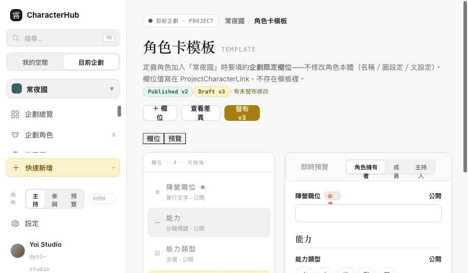

CharacterHub · Slice 5A · 角色卡模板
Slice 5A 驗收
角色卡模板 Builder 完成。主持人設計「角色加入本企劃要填的企劃限定欄位」——只定義企劃欄位，不修改 Character 本體；欄位值寫在 ProjectCharacterLink，不存在模板裡。含版本管理與破壞性修改防護。
template-builder.html
Draft v3 / Published v2
所有儲存為 Demo only
01
可點擊頁面
Clickable
模板管理是主持人限定——切「視角」到 參與／預覽 會看到 Forbidden（403）。
02
畫面
Screens

三欄 Builder：左欄位清單（型別／可見性／排序）、中即時預覽（角色擁有者／成員／主持人視角）、右欄位設定。版本徽章 Published v2 / Draft v3。
即時預覽視角
切換 Owner／Member／Host 視角：依 visibility 裁切顯示哪些欄位、依 editableBy 顯示唯讀鎖；主持人限定欄位只在 Host 視角出現。
版本差異
「查看差異」列出 Draft v3 相對 Published v2 的新增（能力類型/主題色）、修改（立場 改必填+選項）、移除（主持人備註，舊值保留）。發布不破壞既有資料。
破壞性修改
改型別／刪欄位／移除選項／改必填時，顯示受影響角色數（⚠ N 個角色）＋處理選項（保留舊值／標記待遷移）——不是一般確認框。
03
Template／Field／FieldValues 邊界
Data boundary
ProjectTemplate
- projectId · name · status
- version · publishedAt?
ProjectTemplateField
- key · label · description · type
- required · visibility · editableBy
- sortOrder · validation · options? · defaultValue?
FieldValues
- 不存在模板裡
- 寫入 ProjectCharacterLink.fieldValues[fieldId]
- 主持人限定欄位的值也在這，不另建重複欄位
模板只定義企劃限定欄位（陣營／職位／能力類型／主持人備註…），絕不碰 Character 本體（名稱／圖設定／文設定）。欄位型別 11 種：單行／多行／數字／單選／多選／勾選／日期／色票／圖片／關聯／分隔標題。
04
Visibility / EditableBy
Permissions
可見性：public／members／host／owner_only（即時預覽依視角裁切）。可編輯者：character_owner／host／both（非可編輯視角顯示唯讀鎖）。主持人限定欄位的值仍寫在 fieldValues，由 renderer 依 viewer 裁切——不另建重複資料欄位。動作權限：template:create/update/publish/archive、templateField:create/update/delete/reorder。
05
版本與破壞性修改
Versioning
模板發布後不直接破壞既有角色資料：修改已發布模板＝建立新 Draft 版本；發布前以「查看差異」預覽新增／修改／移除；既有 ProjectCharacterLink 保留 templateVersionId；移除欄位不立即刪除舊值。破壞性修改（改型別／刪有值欄位／移除 select 選項／選填改必填／降字數上限）顯示受影響角色數與處理選項，不只跳一般確認框（已驗證：刪「立場」→ ⚠ 1 個角色 + 2 處理選項）。
06
Responsive / A11y
Responsive · Accessibility
桌機三欄；平板欄位清單＋預覽／設定切換（手機段）；手機欄位清單＋單欄位設定＋預覽分頁＋上移／下移按鈕（不強迫拖曳）。A11y：欄位排序鍵盤替代（方向鍵）、表單控制有 label、必填用「必填」徽章不只顏色、Modal Focus Trap＋Esc、變更 aria 公告、預覽視角切換可鍵盤操作。請在實機 360／390／768／1024／1440px 確認。
07
狀態
States
1-3尚未建立模板（空態）/ Draft / Published
4-6有未發布修改 / Archived / 載入失敗
7-9無權限（Forbidden）/ Member 填寫預覽 / Host 管理預覽
08
修改檔案
Files
| 檔案 | 變更 |
|---|
| assets/data.js | ProjectTemplate／ProjectTemplateField fixtures（v2 published + v3 draft + school v1，含各型別、host-only、破壞性差異）＋helper（templatesOf/fieldsOf/templateDiff/fieldAffectedCount…）；ACTION_GRANTS 補 template／templateField 動作。 |
| assets/template.css | 三欄 Builder、欄位清單＋排序、即時預覽、欄位設定、破壞性 modal、響應式。 |
| pages/template-builder.html | Builder、即時預覽視角、版本差異、破壞性修改、動作權限、Forbidden、A11y。 |
| index.html | 角色卡模板標記為已重設計，加 Slice 5A 報告連結。 |
09
Contract / API Status
Status
DOMAIN CONTRACT READY · ProjectTemplate / ProjectTemplateField
UI 與欄位概念已確定（見 §03）。FieldValues 寫入 ProjectCharacterLink.fieldValues，不存模板。
5A.1 交接 · 版本結構
ProjectTemplate{currentPublishedVersionId, currentDraftVersionId} + ProjectTemplateVersion{id, templateId, versionNumber, status, publishedAt}；Field 屬於特定 templateVersionId。Draft v3 與 Published v2 並存。
5A.1 交接 · 穩定欄位識別
跨版本用 fieldKey（或 stable fieldDefinitionId）；fieldValues[fieldKey] 優先，不假設 field row id 跨版本不變。
5A.1 交接 · 系統欄位 vs 自訂欄位
平台系統欄位（factionId／projectRole／status）與模板自訂欄位分離，模板不可重建與系統欄位衝突的第二份資料。可見性命名改 public／members／hosts／character_owner（避免與企劃 Owner 混淆）；預覽 Owner 標為「角色擁有者」。關聯型欄位存 entity reference（不自動建 EntityLink）、圖片型存 assetId（不複製 metadata）；Host-only 必填不阻擋角色擁有者提交。
DATA GAP · 版本遷移策略
破壞性修改的「標記待遷移」需後端遷移流程；templateVersionId 對應的舊值保留策略需正式 schema。
API STATUS · NOT IMPLEMENTED
本地正式 Template API、D1 CRUD、發布版本管理、roundtrip 尚未完成。本輪全為 Demo。
10
Demo-only / 尚未完成
Demo · Open issues
- 新增／編輯／刪除欄位、排序、複製、發布皆為 Demo toast（不寫回）。
- 欄位設定編輯（標籤／選項／驗證）即時預覽未雙向綁定。
- validation 規則（字數／數值範圍）為示意，未做即時驗證。
- 關聯型欄位（Character／WorldEntry）的選擇器未做。
- 真實 persistence／版本遷移未接。